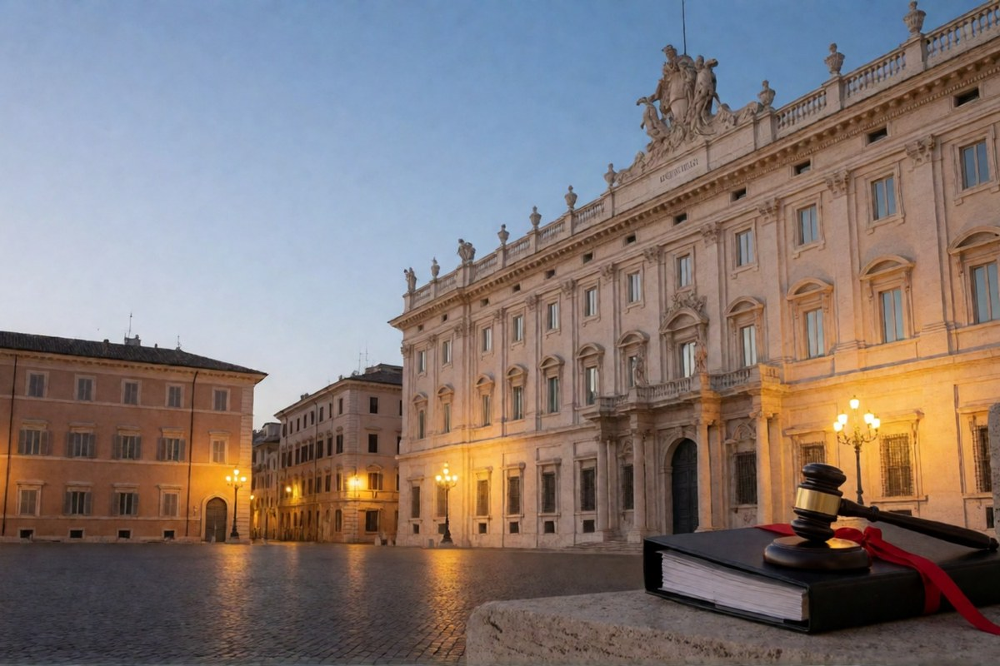

Cronaca · 6 novembre 2026
Caso Almasri, la Consulta apre la strada al processo per Bartolozzi

Per l'ex capa di gabinetto di Nordio non serve l'autorizzazione della Camera: la Procura di Roma può procedere per false informazioni. Ma il tribunale dei ministri dovrà spiegare perché non l'ha ritenuta complice.
di Franco Zanghì
Il 6 novembre 2026 la Corte costituzionale ha deciso una questione che teneva fermo da mesi un pezzo del caso Almasri: la Procura di Roma può procedere contro Giusi Bartolozzi, fino a marzo capa di gabinetto del ministro della Giustizia Carlo Nordio. L'accusa è di aver reso false informazioni ai magistrati. Per Bartolozzi vale la presunzione d'innocenza fino alla sentenza definitiva.
La Corte ha accolto solo in parte il conflitto di attribuzione sollevato dalla Camera dei deputati: l'autorizzazione del Parlamento non serve, ma la Procura e il tribunale dei ministri hanno un obbligo di informazione verso la Camera che non è stato rispettato.
I fatti di gennaio 2025
Nel gennaio 2025 il generale libico Osama Najim, noto come Almasri, ricercato dalla Corte penale internazionale per crimini contro l'umanità, viene arrestato a Torino. Pochi giorni dopo viene liberato e riportato a Tripoli con un volo dei servizi.
Dall'inchiesta che ne nasce il tribunale dei ministri chiede di processare Nordio, il ministro dell'Interno Matteo Piantedosi e il sottosegretario alla presidenza del Consiglio Alfredo Mantovano. Per i ministri serve il via libera del Parlamento, e la Camera lo nega.
La posizione di Bartolozzi è diversa, perché non è un membro del governo. La Procura di Roma la accusa di aver detto il falso ai magistrati e ne chiede il giudizio immediato, senza udienza preliminare. L'udienza, fissata per settembre, viene sospesa in attesa della Consulta.
La tesi della Camera e la decisione della Corte
La Camera sosteneva che la posizione di Bartolozzi fosse legata a quella dei ministri: stesso filone, quindi stessa strada, con il tribunale dei ministri e con l'autorizzazione dell'aula. In udienza, per la Camera, il professor Vittorio Manes ha aggiunto che Bartolozzi era stata sentita senza le garanzie di chi è indagato in concorso con altri.
La Corte ha risposto che il reato contestato a Bartolozzi è collegato a quello dei ministri ma non è lo stesso reato commesso in concorso: l'autorizzazione della Camera non serve, e il procedimento ordinario può andare avanti. Ha però rilevato due mancanze. Il tribunale dei ministri avrebbe dovuto motivare perché non riteneva Bartolozzi concorrente dei ministri, e quella valutazione andava comunicata alla Camera, in nome della leale collaborazione fra i poteri dello Stato.
Che cosa succede adesso
Il tribunale dei ministri può confermare per iscritto che non c'è concorso, comunicandolo alla Camera, oppure chiedere all'aula l'autorizzazione a procedere anche per lei. In entrambi i casi, scrive il Post, i procedimenti restano separati e il giudizio chiesto dalla Procura di Roma può proseguire. Secondo l'Ansa, l'obbligo di informare la Camera potrebbe aprire un nuovo passaggio di attrito fra magistratura e Parlamento.
Bartolozzi è magistrata da venticinque anni. A marzo si è dimessa dal ministero insieme al sottosegretario Andrea Delmastro, dopo la sconfitta del governo al referendum sulla separazione delle carriere, e il Consiglio superiore della magistratura le ha consentito il rientro in servizio. È anche la moglie di Gaetano Armao, ex vicepresidente della Regione Siciliana, finito agli arresti domiciliari il 6 novembre in un'inchiesta per corruzione: due vicende giudiziarie distinte, che nulla hanno in comune oltre alla data.
Resta il punto che questa decisione mette in chiaro: per i tre membri del governo ha deciso un voto politico, e il voto ha detto no. Per chi lavorava accanto al ministro decide un giudice. Le domande su quei giorni di gennaio tornano in un'aula di tribunale.
Fonti
- Il Post, «Giusi Bartolozzi potrà essere processata», 6 novembre 2026
- Sky TG24, «Caso Almasri, Consulta: la Procura può procedere su Bartolozzi», 6 novembre 2026
- Editoriale Domani, «Caso Almasri, la Consulta: Bartolozzi potrà essere processata», 6 novembre 2026
- Ansa e il Giornale, lanci del 6 novembre 2026 sulla sentenza della Corte costituzionale
- Open, «Sicilia, arresti domiciliari per l'ex vicepresidente regionale Gaetano Armao», 6 novembre 2026
Il testo della sentenza integrale della Corte costituzionale non era ancora consultabile alla data di pubblicazione: il contenuto della decisione è ricostruito dai resoconti delle testate. Il riferimento all'arresto domiciliare di Gaetano Armao è stato aggiunto in sede di ricontrollo e riguarda un procedimento diverso.